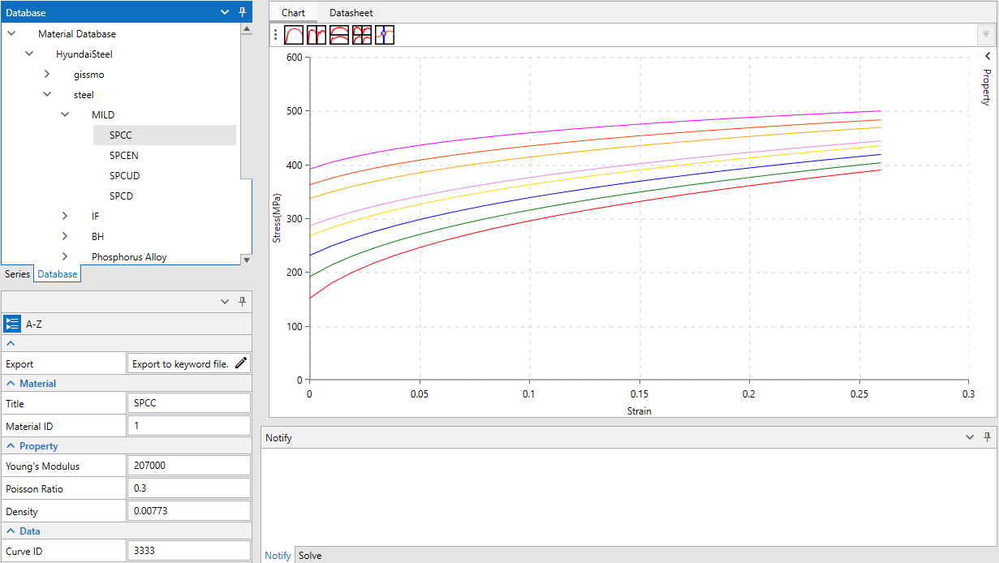
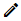
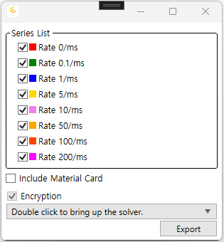
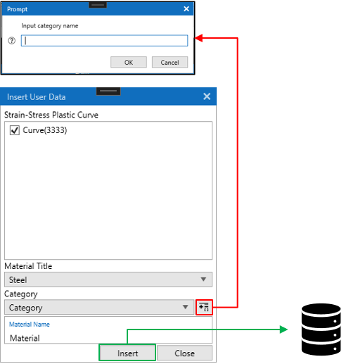
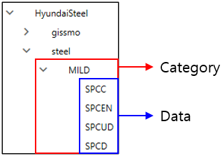

데이터베이스
LAMP에서는 LS-Dyna의 물성 데이터를 저장 및 공유하기 위한 데이터베이스 인터페이스를 제공합니다. 현재 LAMP에서는 MariaDB를 활용하여 개발하고 있기 때문에 데이터베이스 서버에 MariaDB 설치가 필요합니다. 제한된 환경에서 테스트 되고 있기에 다음 환경에서 MariaDB를 활용한 LAMP 사용이 가능합니다. 사용 가능한 환경에 대한 정보는 향후에 테스트 후 추가 될 예정입니다.
OS : Windows 10 or 11
MariaDB Version : 10.5.3
1. MariaDB 설치 및 현대제철 물성
LAMP에서는 Steel계열의 현대제철 물성 데이터를 제공하고 있습니다. 현대제철 물성을 사용하기 위해서는 LAMP Server, MariaDB를 설치 후 LAMP Server에서 제공되는 현대제철 물성 데이터 (hyundaisteel_db.sql)파일을 로드 하여야 합니다. 자세한 내용은 LAMP Server 설치, MariaDB 설치 그리고 현대제철 물성 적용에서 확인 할 수 있습니다.
2. 물성 확인 및 출력
2.1 물성 확인
데이터베이스의 데이터를 확인하기 위해 LAMP 좌측 트리 뷰에서 Database 탭을 선택하고, 확인하고자 하는 물성을 선택합니다. 선택하게 되면 트리뷰 하단에 물성의 속성이 출력되며, 물성에 포함된 커브 데이터가 그래프로 표시 됩니다.

2.2 물성 출력
선택한 물성 데이터를 LS-Dyna 키워드 파일로 출력하기 위해서 트리 뷰 아래에 표시되는 속성에서 Export 항목의  아이콘을 클릭합니다. Series List에서 출력하고자 하는 커브 데이터를 선택하고 Include Material Card와 Encryption 항목을 필요에 따라 선택합니다. 암호화 유무에 따라 LS-Dyna solver를 선택하고 Export를 클릭하여 데이터를 LS-Dyna 키워드 파일로 출력합니다. \
Note
현대제철 물성은 암호화가 필수로 진행되며 Encryption 선택란이 비활성화 됩니다.
사용자 물성을 출력할 경우 암호화를 위해 Encryption 항목을 체크하였다면 암호화를 위해 LS-Dyna 솔버와 gpg 설치가 필요합니다.
LS-Dyna solver 선택 및 gpg 설치는 아래 내용을 참고하시기 바랍니다.
Important
파일 암호화를 위해 gpg가 필요합니다. 설치가 되어 있지 않다면 아래 링크에서 다운로드 받아 설치하세요.
설치 확인은 command window에서 gpg –version 명령어로 출력되는 메세지를 확인하세요.
Gpg4win 설치 파일 다운로드
Selection of LS-Dyna solver
Double click to bring up the solver에서 마우스 더블 클릭하고 LS-Dyna Solver가 있는 경로를 선택합니다.
선택된 경로에 있는 모든 ls-dyna solver가 나열되며 하나의 solver를 선택합니다.
Series List : 선택한 물성에 포함된 Strain rate에 따른 데이터를 표시
Include Material Card : 출력파일에 물성 카드를 포함 할 것인지를 선택
Encryption : 데이터를 암호화하여 출력할 것인지를 선택

Expiration of encrypt file
데이터베이스에서 암호화 파일로 데이터를 출력한 경우 암호화 파일은 LAMP의 라이선스 기간까지만 사용 가능합니다.
즉 LAMP 라이선스 기간이 만료되면 LAMP에서 출력한 암호화 파일은 사용할 수 없으며, 해석 시 에러와 함께 종료 될 수 있습니다.
3. 데이터베이스에 물성 추가
LS-Dyna 키워드 파일에 정의되어 있는 Material 카드 정보를 데이터베이스에 저장할 수 있는 기능으로 현재 추가할 수 있는 물성 카드는 다음과 같습니다.
*MAT_PIECEWISE_LINEAR_PLASTICITY
1.1 입력 패널 UI
LAMP의 상단 아이콘 메뉴에서  아이콘을 클릭합니다.
아이콘을 클릭합니다.

1.2 물성 추가하기
키워드 파일 불러오기
Keyword file(Double click to open file) 입력란에서 마우스로 더블 클릭합니다.
LS-Dyna 키워드 파일을 선택합니다.
불러온 키워드 파일에서 지원되는 물성 카드를 찾아 목록으로 표시합니다.
추가할 물성 선택
좌측 첫번째(파란색 테두리)에서 DB에 추가할 물성을 선택합니다.
가운데(노란색 테두리)에 선택한 물성 카드의 ID들이 표시되며 추가할 ID 항목을 선택합니다.
우측 첫번째(녹색 테두리)에서 선택한 물성의 정보를 확인합니다.
Check text 버튼을 통해 선택된 물성 카드를 텍스트로 확인 할 수 있습니다.
데이터베이스에 추가
Insert to DB를 클릭합니다.
아래 그림의 Insert User Data 창이 표시되며 물성 카드에 커브 데이터가 있다면 Curve ID가 표시됩니다.
재료 데이터는 카테고리 항목 아래에 저장되기에 Category를 선택합니다.
 로 추가 할 수 있습니다.
로 추가 할 수 있습니다.물성 이름(Material Name)을 입력하고 Insert를 눌러 DB에 데이터를 저장합니다.

1.3 DB에서 저장된 데이터 확인
사용자가 추가한 데이터는 트리 뷰의 database 탭에서 user_db 항목에 추가 됩니다.
1.4 물성 삭제하기
데이터베이스에 추가된 데이터를 LAMP에서 삭제 할 수 있습니다. 데이터의 삭제는 데이터베이스 트리 뷰에서 삭제할 Category 항목 혹은 Data 항목을 선택하고 마우스 우클릭 메뉴에서 삭제 항목을 선택하여 삭제할 수 있습니다.

Note
제공되는 현대제철 물성은 삭제 할 수 없습니다. \
Category 항목을 제거하면 해당 Category에 추가된 Data 모두를 삭제합니다.